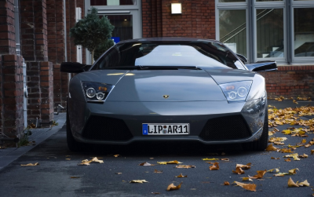

|  |
Lamborghini Murcielago
|
The Lamborghini Murciélago is a high-performance sports car produced by the Italian automaker Lamborghini between 2001 and 2010. It was named after a famous Spanish fighting bull that survived 24 sword strokes in a bullfight in 1879.
The Murciélago features a mid-engine layout and is powered by a naturally aspirated 6.2-liter V12 engine, which produced between 571 and 661 horsepower depending on the specific model. It was available with both manual and automated manual transmissions.
The Murciélago's exterior design was characterized by sharp angles and aggressive styling, and it featured Lamborghini's signature scissor doors. The interior was also luxurious, with high-quality materials and a driver-focused cockpit.
The Murciélago was known for its impressive performance, with a top speed of over 200 mph and a 0 to 60 mph time of around 3.5 seconds. It was also the first Lamborghini to feature all-wheel drive, which helped to improve its handling and traction on the road.
Lamborghini introduced several special editions and variants of the Murciélago during its production run, such as the Murciélago LP640 and the Murciélago SV. These models offered even more power and performance, making the Murciélago a beloved and sought-after supercar.